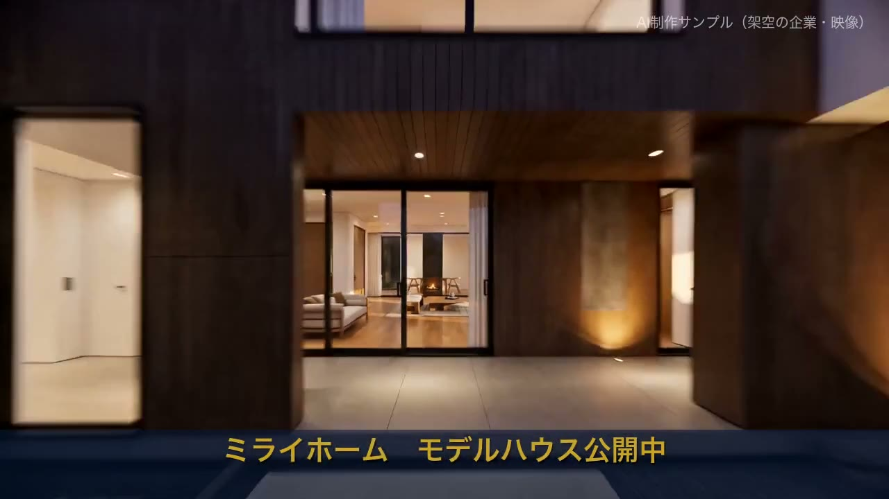
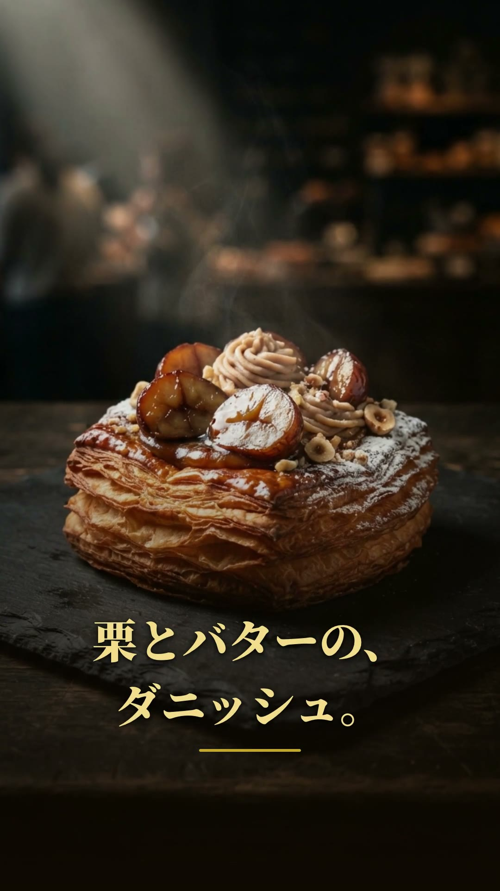

カメラもドローンも使っていません。文章の指示だけで、動画生成AIが作った住宅プロモーション映像です。
魔法ではなく、指示文の組み立てです。冒頭と工程だけ先に公開します。
「夕暮れのモダンな日本の戸建て住宅の、シネマティックな不動産プロモーション動画。白壁と濃い木目のファサード……」
全文のチューニング手順と、御社題材への当て方は無料相談でそのままお見せします。
完成前物件、コンセプトムービー、SNS広告——「実物がまだ無い」「撮影費が出せない」場面で特に効きます。
この15秒（3カット・音声つき）の生成は約15分。従来の撮影・CG入口と比べ、試すハードルが一気に下がっています。
特別な機材も編集スキルも不要。良い指示文とツールの目利き——研修で身につく領域です。
同じ作り方で、こうした映像に展開できます。
映像ファミリーの前後工程も触れます。
テキスト・図形・写真を組み合わせたモーショングラフィックス。
▶ 見る
トリム・テロップ・BGM差し替えの編集品質サンプル。
▶ 見る
ロゴ・バナー・チラシ・SNS・縦型動画広告まで一式。
▶ 見る